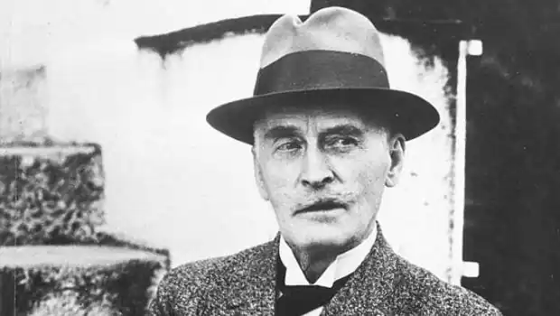
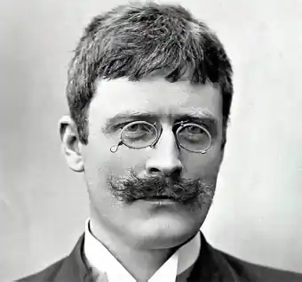
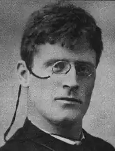

ГАМСУН, Кнут (Hamsun, Knut; автонім: Педерсен, Кнут — 04.08.1859, Лом в Гюдбраннсдалі — 19.02.1952, Норхольм) — норвезький письменник, лауреат Нобелівської премії 1920 р.
В одній норвезькій книзі про Гамсуна є його своєрідний портрет. Там зображений березовий гай. І на кожному стовбурі, в овалах, що залишилися на місці засохлих і відмерлих гілок, — обличчя Гамсуна. Він — частина цього гаю, частина самої природи.
На початку творчого шляху художник в статті "Про неусвідомлене духовне життя" ("Fra det ubevidste sjaeleliv", 1890) подав нове розуміння людської психології. Він заявив, що його завданням є не зображення людських типів, а відтворення гранично індивідуальних відчуттів людини, котра народжена не якимось соціальним прошарком суспільства, а масою розрізнених і різнорідних вражень, які іноді різко суперечать одне одному. Гамсун стверджував, що створює людський характер, який підпорядковується внутрішнім, іноді — фізіологічним, імпульсам. У поведінці його персонажів важливу роль відіграють "скарга кісток ніг"; при цьому він уточнював — "трубчастих кісток ніг". Не будемо думати, що він дійсно так вибірково ставився до "поведінки" тих чи інших кісток: для Гамсуна важливим був не тільки психічний стан, а й фізіологічні відчуття, які разом керують настроєм і навіть думками та вчинками людей. У нього наприкінці XIX ст. з'явилися настільки незвичні персонажі, настільки незвичні типи психології, що не враховувати його відкриттів уже не могла література наступних років. Про Гамсуна його молодший сучасник із Франції А. Жід, котрий створив новий тип психологічного роману XX ст., у передмові до перекладу французькою мовою роману Гамсуна "Голод" писав: "Перед "Голодом" я маєш право думати, що до сьогоднішнього дня нічого не було сказано і що людину потрібно відкривати". "Голод" подав складну психологію, часто — психологію несвідомого. Приховані спонуки, неоднозначні імпульси, дивні рішення та вчинки, які не завжди можна пояснити строго логічно, стали характерними рисами гамсунівських персонажів. Починав він зовсім не сенсаційно. Народився майбутній письменник на півночі Норвегії в сім'ї сільського кравця. Він згадував про радощі і турботи свого дитинства, коли йому, як і багатьом його одноліткам, доводилось випасати худобу ("По казковій країні"). Тут і прості турботи селянина, і вміння бачити прекрасне, милуватися красою неба, радіти найпримітивнішим відчуттям. Усе це потім з'явиться ще не раз в оповіданнях і романах Гамсуна. Однак перші спроби в царині художньої творчості успіху йому не принесли. У 1877—1878 pp. він видав першу збірку віршів і перші оповідання. У віршах відчувався вплив Г. Ібсена, а оповідання змушували згадати повість Б. Бйорнсона "Сюньове Сульбаккен". Навчатися Гамсуну довелось в основному на чоботаря. Не здобувши визнання на батьківщині як письменник, Гамсун декілька років провів в Америці, навідуючись іноді в Норвегію. Він працював водієм конки, робочим у преріях на фермах, але завжди намагався триматися поблизу тих норвежців, котрі цікавилися літературою. Світогляд Гамсуна все ширшав. Його цікавили і норвезькі, і французькі прозаїки та поети. В Америці Гамсун особисто познайомився з Марком Твеном і вчився у нього особливо обережного ставлення до слова, іронічному і сатиричному зображенню світу і людини. До кінця 80-х pp. Гамсун сформувався як оригінальний письменник із власною естетичною програмою, що відобразилася у трьох доповідях 1891р. — "Норвезька література" ("Norsk Literatur"), "Психологічна література" ("Psykologisk Literatur") і "Модна література" ("Mode Literatur"), де він протиставив своє бачення мистецтва тим законам, які були вироблені в 70—80 pp. У першій доповіді Гамсун піддав переоцінці норвезьку літературу попереднього періоду, перш за все "чотирьох великих" — Б. Бйорнсона. А. Х'єлланна, Г. Ібсена і Ю. Лі — останнього меншою мірою, бо він, на думку Гамсуна, створював досконаліші в психологічному розумінні характери. Ця література, як вважав Гамсун, розвивалася під сильним впливом В. Гюго Й Е. Золя, яка тут трактувалася як звернення перш за все до соціальних проблем. "Вона за своєю суттю матеріалістична, оскільки змальовує суспільство, — писав він, — вона більше цікавиться звичаями, аніж людьми, суспільними питаннями, а не душею", зображує "найзагальніше у людині", але цим загальним є "душа, яка для наших авторів є майже невідомою країною". Гамсун не заперечує необхідності суспільного змісту літературного твору й образу, але він за те, щоб індивідуальне, неповторне в образі, його глибинна психологія були поставлені на перше місце. Найменше такого психологізму Гамсун знаходить в Г. Ібсена, котрий зображує "найпростішу психологію характерів". Вони настільки "непохитні" у нього, що з ними не може трапитися нічого випадкового — вони позбавлені нюансів. Особливе враження справила на нього в цей час книга Е. Хартмана "Психологія позасвідомого" (1871), статті і твори шведа А. Стріндберга. Через Стріндберґа він познайомився з працями філософа-містика Е. Сведенборґа. Стрінберґівське сприйняття жіночого характеру також справило помітний вплив на жіночі персонажі Гамсуна. Прикладом психологічної літератури Гамсуну слугувала література Франції 80—90-х pp., — зокрема література натуралізму, який Гамсун сприймав в основному у зв'язку з руссоїстськими мотивами, зі сприйняттям людини як частини природи. У статті "Психологічна література" Гамсун виклав свою позицію детальніше: "Автор не є частиною загального, яким би він повинен бути, якщо б він міг бути об'єктивним, автор — неповторна індивідуальність, суб'єкт, котрий дивиться тільки своїми очима, суб'єкт, який відчуває тільки власним серцем, — і найбільші письменники Землі не були б великими, якби створювали об'єктивну поезію, але вони якраз писали прекрасно, пристрасно, по-своєму. Я хочу створювати своїх людей, як я відчуваю їх, а не як передбачає позитивізм; я хочу змушувати мого героя сміятися тоді, коли освічені люди гадають, що він повинен плакати". У підсумку в Гамсуна виявляються дві сфери існування людини: міська цивілізація, яка занапащає її, і природа — основна умова життя кожної справжньої особистості. Нова концепція особистості, відображена у статтях, була вперше втілена в романі "Голод" ("Suit", 1890), який вийшов друком у Данії, де зразу ж привернув особливу увагу. Норвежці поставилися до роману спочатку доволі байдуже, тільки пізніше Г. став національною гордістю країни. Сам Гамсун називав "Голод" не романом, а серією аналізів. Його означення видається правильнішим, оскільки звичного романного сюжету у творі немає. Гамсун пропонує нам розповідь людини, котра здобула якусь освіту письменника-початківця. Твір частково автобіографічний. Герой, якого автор не називає, опинився у матеріальній скруті: у нього немає грошей на харчування, він не може купити собі новий одяг, йому нічим заплатити за квартиру. Ланцюг принижень злиденного інтелігента — ось зовнішній бік цього твору. Форма твору — зовсім новий тип психологічного дослідження гранично індивідуальної особистості та її миттєвих імпульсів — стає справжнім змістом книги. На перших сторінках роману Гамсун детально описує дрібниці, які, здається, зовсім не мають значення: чим обклеєна стіна біля дверей, що герой бачить із вікна і т. п. Усі ці деталі передають стан героя, різноманітність вражень, їхню миттєвість, хаотичність думок людини, котра, як поступово стає зрозумілим, систематично голодує. Своєрідна зав'язка роману: героєві вдалося закласти свій жилет, він поїв, але виявив, що разом із жилетом віддав єдиний недогризок олівця, тому йому нічим написати задуману статтю, за котру йому б заплатили 10 крон; він хоче повернутися до лихваря і забрати назад свій олівець, по дорозі зустрічає дівчину, хоче привернути її увагу найнеординарнішим чином і називає її про себе дивним іменем Ілаялі. Але автор не тільки зображує химерні дії свого героя, а й змушує його аналізувати своє становище та свої вчинки. При цьому постійно звертає увагу читача на те, що це дії людини, котра постійно голодує. Дійсно, створюється враження, що автор передає "скарги кісток ніг" свого героя. У "Голоді" поєднуються, здавалось би, зовсім непоєднувані речі: творче натхнення та буденні турботи про те, скільки можна отримати за свій черговий шедевр, мрії про зустріч із Ілаялі та роздуми про те, як від голоду починає випадати волосся. Г. пильно стежить за своїм героєм і зазначає, як змінюється його сприйняття світу, як прогресує його нервозність під впливом голоду, руйнуються уявлення про чесність. Новий етап пов'язаний із тим, що голодний герой позбувся притулку, він ночує просто неба — в лісі або в парку, якщо його не проганяє поліцейський. Муки голоду спотворюють свідомість героя, безглузді реакції та вчинки досягають апогею тоді, коли у напівзабутті від голоду він кусає власний палець, щоби хоч щось відчути в роті. Смак крові повертає йому свідомість. Людина, яка вкрала чужі гроші, вигнана із квартири за несплату, замучена постійними приниженнями, герой, хоча він уже не хлопчина, наймається на корабель юнгою і відпливає в Англію. Роман "Голод" зробив Гамсуна одним із перших письменників не тільки Норвегії, а й Європи. Гамсун знайшов свого героя — це напівінтелігент, котрий пориває з цивілізацією, що руйнує особистість. Створений автором персонаж, дещо змінюючись, з'являтиметься тепер у всіх його творах. Найскладнішим із них став Нагель в "Містеріях" ("Mysterier", 1892). Якщо героя "Голоду" можна було б звинуватити у дивакуватості, що часто спричинена граничним виснаженням, то Нагель дивний за своєю природою. Людина добра, котра тонко відчуває, здатна на сильне кохання (а здатність любити стає обов'язковою властивістю героя Гамсуна, як і у романтиків), вона безмірно страждає від міщанської обмеженості інтересів, грубості, обману та пліток, що панують у маленькому містечку, куди її закидає доля. Скалічений брехливим суспільством, Нагель сам живе ніби подвійним життям: одне, справжнє, — глибоко приховане, не зовсім зрозуміле йому самому, а друге, зовнішнє, постійно дивує навколишніх людей. Ще дивнішим він видається через те, що сам іноді поширює про себе небилиці.